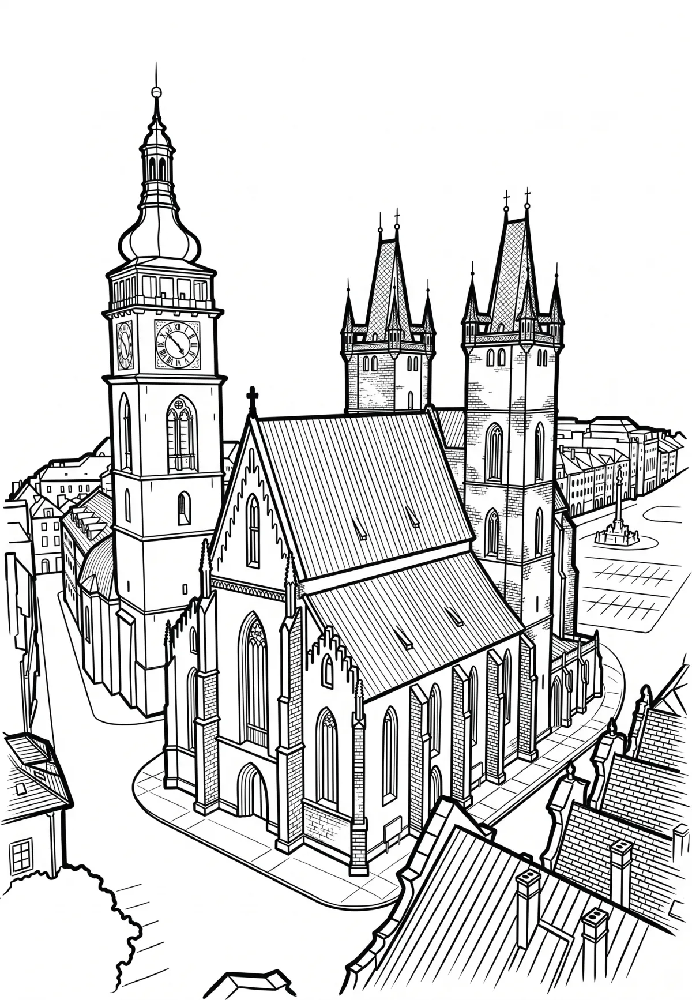

Hradec Králové
Hradec Králové je statutární město v okrese Hradec Králové na východě Čech, ležící na soutoku Labe s Orlicí. Je metropolí Královéhradeckého kraje, společně s nedalekými Pardubicemi tvoří metropolitní oblast s 340 tisíci obyvatel. V samotném Hradci Králové žije přibližně 94 tisíc obyvatel. Pro své příhodné vlastnosti bylo území Hradce osídleno již v dobách prehistorických.
Více na Wikipedii